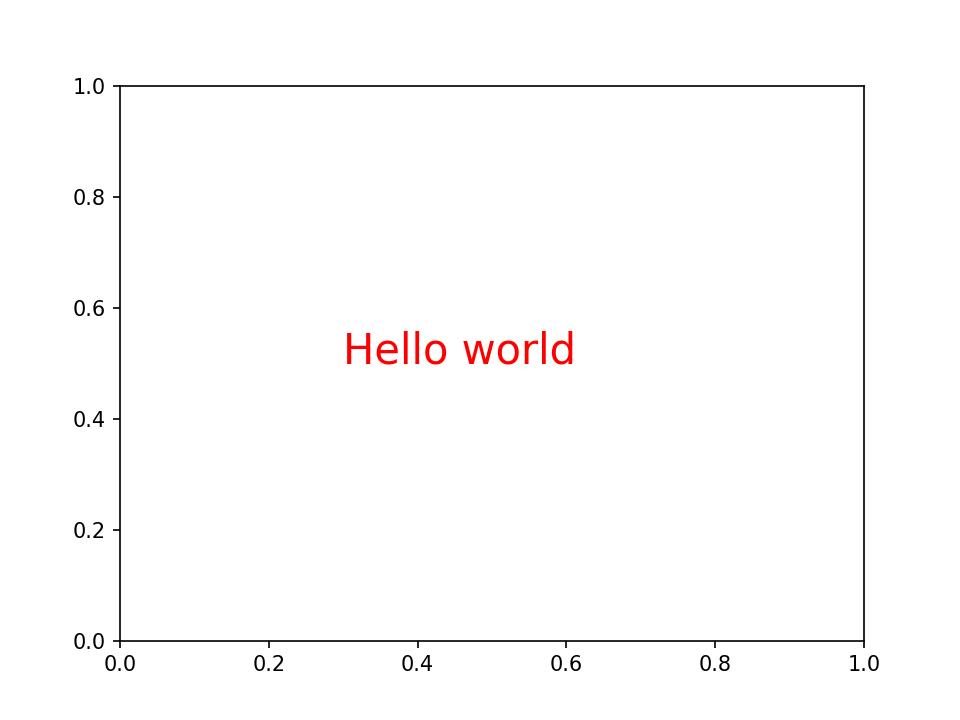

Create your theme
This document explains everything you need to know to create a theme in matplotlib, and optionally how to add it to morethemes.
rcParams
In matplotlib, themes are made via something called rcParams. It's similar to a global parameter configuration: once applied, it will be set for all charts.
Let's see how this works. First we import pyplot from matplotlib.
For example, I can change the default line widths from matplotlib lines from 1 to 5.
By default it's 1, and it looks like this:

We can then set the default line width to 5.
import matplotlib.pyplot as plt
plt.rcParams["lines.linewidth"] = 5
fig, ax = plt.subplots()
ax.plot([1, 2, 3])
plt.show()

I can also change the default text color from "black" to "red".
import matplotlib.pyplot as plt
plt.rcParams["text.color"] = "red"
fig, ax = plt.subplots()
ax.text(x=0.3, y=0.5, s="Hello world", size=20)
plt.show()

There are more than 300 other parameters like this that we can change. Yes it's a lot, but don't worry. We only need just a few of themes to make great themes.
How morethemes work
Under the hood, themes from morethemes are applied by calling plt.rcParams many times.
For example, when I set the theme to darker, it will call all parameters of this theme and pass them to plt.rcParams:
Create a theme
Before adding your theme to morethemes, it's important that you first make your theme and ensure you like it.
For this, you'll need to do some trials and errors until you're satisfied. An example of a theme could be something like:
import matplotlib.pyplot as plt
# Example of a theme. Change it with your own rcParams.
plt.rcParams["figure.facecolor"] = "#282828"
plt.rcParams["axes.edgecolor"] = "#eeeeee"
plt.rcParams["xtick.color"] = "#eeeeee"
plt.rcParams["axes.spines.right"] = False
But how do you visualize what it looks like in practice? You need to preview it in different scenario.
Preview a theme
In my opinion, the easiest way to preview a theme is to use the mt.preview_theme() function. It will make many different charts and you'll easily be able to view how your theme currently looks like.
import matplotlib.pyplot as plt
import morethemes as mt
# Example of a theme. Change it with your own rcParams.
plt.rcParams["figure.facecolor"] = "#282828"
plt.rcParams["axes.edgecolor"] = "#eeeeee"
plt.rcParams["xtick.color"] = "#eeeeee"
plt.rcParams["axes.spines.right"] = False
mt.preview_theme()
Available parameters
We said before that there was more than 300 parameters to custom. Here are a few tips to know which one you might want to custom.
To get all possible parameters and their default values, run:
Colors
Colors is the main thing that changes in a theme. Here you'll find every param name that you might need:
plt.rcParams["axes.facecolor"] = "black" # Axes color
plt.rcParams["figure.facecolor"] = "black" # Figure color
plt.rcParams["axes.labelcolor"] = "grey" # Label color
plt.rcParams["axes.edgecolor"] = "grey" # Spines color
plt.rcParams["xtick.color"] = "grey" # x tick color
plt.rcParams["ytick.color"] = "grey" # y tick color
plt.rcParams["text.color"] = "white" # Text color
By default, matplotlib charts will be blue. But if your chart has 2 colors, by default, the colors will be blue and orange. If there are 3, the colors will be blue, orange and green. This will continue with 7 other colors.
This is called a prop_cycle. Changing this parameter will also to change default colors in chart elements such as lines or bars. For this we need to import cycler (already installed with matplotlib), and use the following syntax:
from cycler import cycler
plt.rcParams["axes.prop_cycle"] = cycler(
"color", ["#FED789", "#A4BED5", "#72874E", "#023743", "#476F84", "#453947"]
)
Spines
You can control the appearance of spines around matplotlib Axes with the following parameters:
plt.rcParams["axes.spines.top"] = False # Remove top spine
plt.rcParams["axes.spines.bottom"] = False # Remove bottom spine
plt.rcParams["axes.spines.right"] = False # Remove right spine
plt.rcParams["axes.spines.left"] = False # Remove left spine
plt.rcParams["axes.edgecolor"] = "#eeeeee" # Spine color
plt.rcParams["axes.linewidth"] = 1.5 # Spine width
Fonts
It is highly recommended to use a specific font for a theme, as it plays a major role in the brand image. To do this, you need to follow a few steps before you can add a new font.
- add the desired font file to
morethemes/fonts/font-name.ttf. - use this code to set the font:
- add the font licence to
morethemes/fonts/LICENSE(only do this once you've found the right font for your theme).
Others
As there are many other things to customise here, take a look at what other themes are doing in morethemes/themes.py.
Add your theme to morethemes
Once your theme is nice, you can follow the contributing guide to help you implement this new theme.